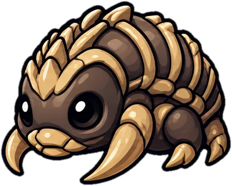

Tap a stage to read its story.
Chitnub is a stubby armored creature with a domed back of ridged brown-tan plates and a round low-slung body that barely clears the amber sand. Two small front claws dig and steer, and its tiny eyes peer forward between heavy brow-plates. It spends the scorching hours of the Amber Desert buried to the neck in warm dune-sand, emerging at dusk to hunt for the old marks pressed into wind-carved stone. It clicks its front claws together twice whenever it finds a old sigil.
Field note: Chitnub clicks its front claws exactly twice when it finds a old sigil carved in desert stone - never once, never three times.
Amber Desert. Chitnub and its family are found in the Amber Desert. See everyone who lives there.
Share a Bond Food that matches its types to become friends. Chitnub loves:
A Bond Food is not a trick. It joins your spirit with the Kimuro's spirit, and only when it chooses you.
Print the Kimuro adventure packs: mazes, cards, a board game and Bond Mark medals.
See the printable packs